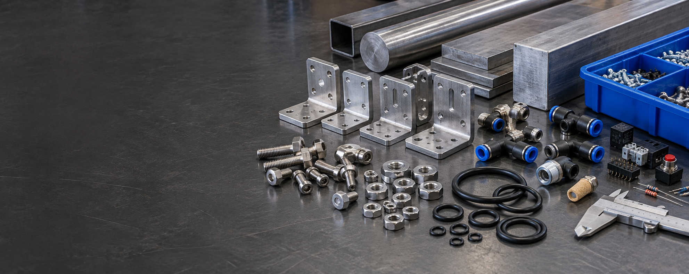

Fasteners and mounting hardware
Socket and button-head screws, nuts, washers, bolts, and T-slot hardware.

Coverage
Recent purchase-order activity spans mechanical hardware, fittings, seals, raw materials, and electronic components across demanding sectors.
A view of the categories represented in the presentation's purchase-order summary.
Socket and button-head screws, nuts, washers, bolts, and T-slot hardware.
Test rack parts, handles, pins, brackets, bumpers, manifolds, and frame end caps.
NPT and BSPP adapters, tube and hose fittings, and on/off and solenoid valves.
PTFE, EPDM, Buna-N and steel O-rings, rubber grommets, and KF40 center seals.
Neodymium magnets, stainless parts, aluminum clamps, brass coil, and thin metal stock.
SMD fuses, 0402 resistors, LDO devices, wire duct, and DIN rails.
Zapeks supports teams that depend on parts for production, infrastructure, and technical builds.
Production continuity and lifecycle component needs.
Power, storage, and infrastructure builds.
Network and communications equipment.
Controls, automation, and operating equipment.
Requirements where traceability and reliability matter.
Fast-paced, timeline-critical projects.
Need something specific?
Include approved alternates, quantities, delivery timing, and quality requirements when available.